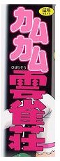
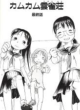

或るブックサイトを見ていたら、コミックのカテゴリーで見慣れない書名を発見。
（ん？、カムカム雲雀荘？記憶にないなぁ....）
と思いながらよく見ると、隅っこに「成年コミック」と書いてある。
（そうか、それで記憶にないのか）と勝手に納得。
Ｈ系のコミック雑誌にも、ときどき麻雀を材料にしたものが掲載される。しかしσ(-_-)は麻雀以外では、哲学と宗教の本しか読まない。(^-^；
そこでＨ系のコミック情報はどうしても見逃しやすい。それで記憶にないのかと、勝手に納得した次第。それにしても雲雀荘（くもすずめそう）とは変な店名の設定だと思った。(^-^；
当然と言えば当然だけど、Ｈ系の麻雀コミックはバカバカしいものばかり。しかし面白いものが多い。たとえば今月号の月刊近代麻雀に載った「麻雀お嬢、なつみ」なんてのは、そのバカバカしさは涙が出るほど面白かった。
しかしＨ系麻雀コミックは単行本されることは少ない。かりに単行本になっても、発行部数も少ない。そこでコレクターにとっては貴重なアイテム。というわけで即注文した。
するとまもなく書店から、代金先払い要請のメールが来た。（高額品でもないのに、先払いとは珍しい）と思いつつも送金した。やがて送られてきたコミックを見て驚いた。
 
なんと麻雀とは関係もないどころか、雲雀荘（くもすずめ）ではなく雲雀荘（ひばりそう）というアパートを舞台にしたロリータ系のＨコミックだった。それも、もうなんともコメントしようもない内容....
それにしても雲雀という熟語を見ても、「ひばり」という訓読みが頭に浮かばないとは....もうσ(-_-)の頭は完全に雀頭になったかもしんない（笑）...いや、ひさしぶりにマイッタ
マイッタ(^-^；
|